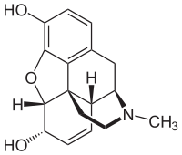
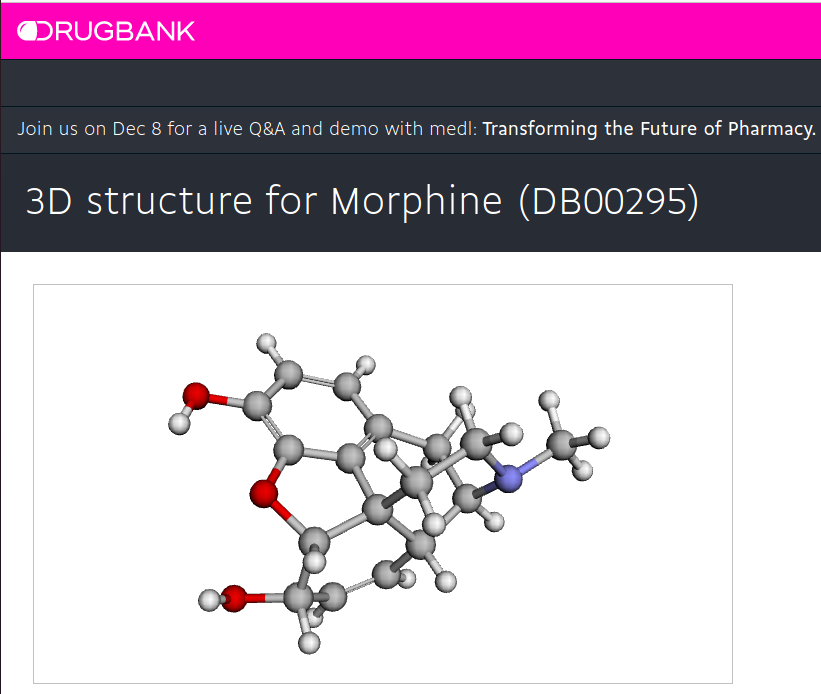
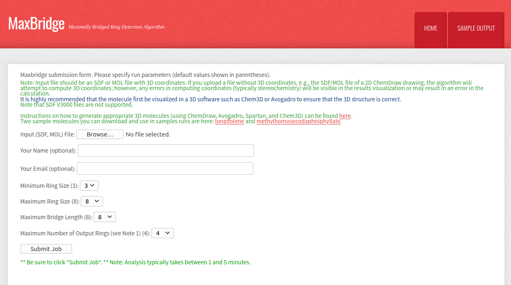
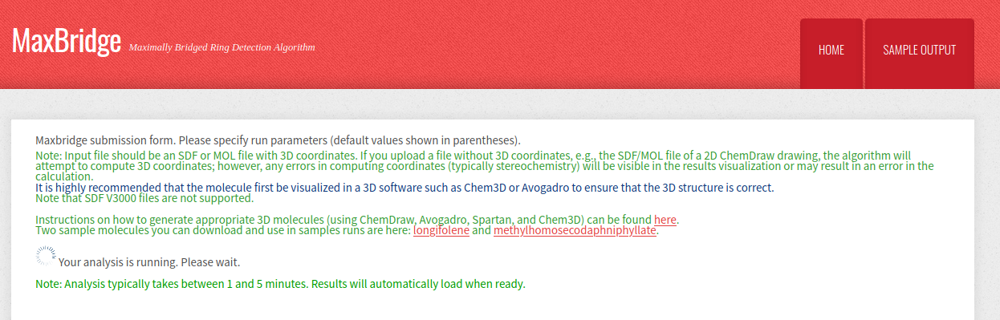
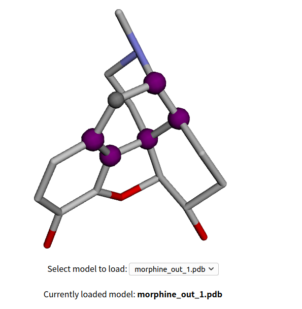
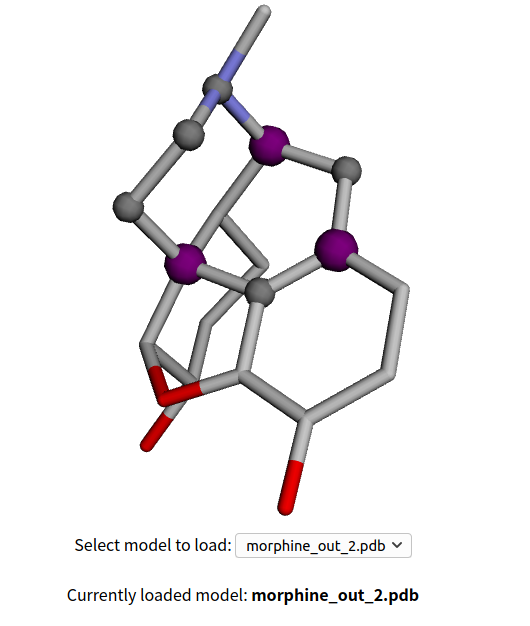

Morpine's structure was determined in 1925, the first patent of total synthesis of it showed up in 1952, followed by several other methods.Morphine means a lot to the whole society, it can reduce pain but also cause addition, it is a fansnation molecule in many ways. But when we talk about the way to get it by total synthesis, what is a good way to break down, especially what should be the first disconnection when we do the retro synthesis analysis ?
image:Wikipedia
It seems there are already some key principle all chemsits agreen on, like make good use of symmetry, since a lot highly complexed structure acturally comprised of two or three exact the same subunit. Also some one would recommend there are certain patten to be a "retron" like the 1,3 positioned N/O reminds people this could be obtained by a Mannich from an ketone (enolatre) with an imunium ion.
if you really think about the whole thing, synthesis paths depend highly on the knowledge structure of the person. Here I quote Richmond Sarpong from University of California, Berkeley, in a 2020 chemistry synposium, but reorgnized based on my own understanding, that "chemists are acturally very biased when doing retrosynthis, we should be objective, for those highly caged nature product, the ring that bridges the most other rings should be disconnect".
The suggestion here is simple and straght forward, that is "Which is the ring that bridges the most other rings ? Find it, and do the disconnection there! Together with some graphic recognition expert, Richmond established a cool web site MaxBridge.org, which is designed to find out the key ring that would enable people "objectively" look at a complex molecule.Next, we will show a quick guide how to use this web site to help you focus on the key ring out of many looking extremely similar if not exactly the same.
Go to DrugBank, type "morphine" and find the 3-D coordinate. click the download as MOL file, then your computer may be able to download directly as a file, if it shows instead as a web page like below, you could just copy the whole content and paste it to a newly created file called "morphine.mol" (touch morphine.mol), or creat morphine.txt if you use Windows and past it to the txt file.
Go back to the MaxBridge web site, use browse to upload the morphine.mol file, then click "submit" in the bottom, and wait for 1-5 minites while the calculation happening.
 The result will be like the next image, saying that the input file actually is a 2D structure and the web automaticly convert it to 3D before the real analysis (upload 3D structure derived from ChemDarw 3D or any other software can produce such fiel if possible). 5 rings are high lighted as purple or gray, with the first one being the "Max Ring", that the ring bridges the most other rings ! The first and second ring are listed below. The purple atoms are bridged atoms, the gray ones are non-bridged, so from an retrosynthetic perspective, the bridged atoms should be put on more attention when try to break the whole morphine structure.
 The take away home message here, is simple, break down the Max Ring! For more reading about the Max Ring strategy, one can search the group page of Richmond Sarpong, UC Berkeley,Richmond Group